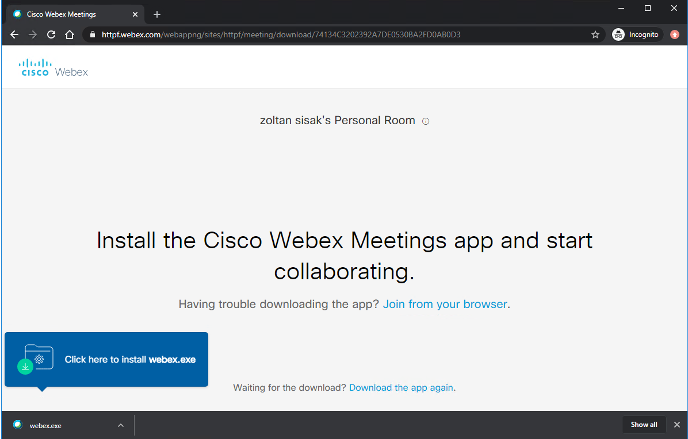
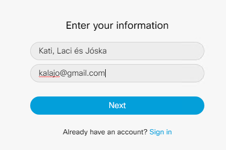
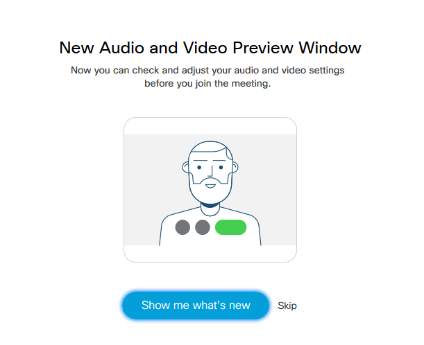
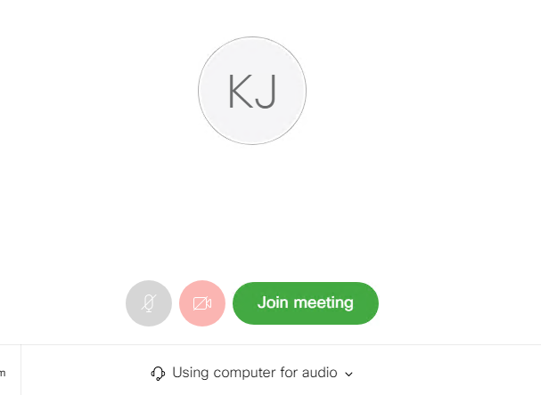
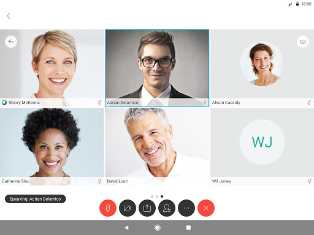

Technikai tudnivalók
Időpont: 2020. májsu 2., szombat 11. óra
Gyülekező 10:30-tól, ha tudsz 10:45-re érkezz meg, hogy 11-re az esetleges technikai problémákat már letudjuk.
FONTOS: Botondnak mindez megelepetés, reményeim szerint 11-kor gyanútlanul fog beállítani.
A videókonferenciához tudsz számítógéppel és okostelefonnal is csatlakozni.
Tennivalók laptop, PC esetén:
-
Szombat 10:30-tól kattints az alábbi linkre:
https://httpf.webex.com/meet/zoltan.sisak -
Ha még nem használtál korábban Webex Meeting videókonferenciát, akkor automatikusan letöltődik egy kis program, amit nem szükséges telepítened, csatlakozhatsz követlenül a böngésződből is. Ehhez kattints a "Join from your browser" feliratra.
 - Alternaítv megoldásként telepítheted a webex kliens programot is, és csatlakozhatsz azzal is. Ehhez kattints a webex.exe feliratra a böngészőablak alján.
-
Ezután meg kell adnod a nevedet (ha többen vagytok, akkor nyugodtan írjatok valami ilyesmit Kati, Laci és Jóska) és az e-mail címedet.
 - Lehet, hogy lesz még egy ilyen ablak is, de ettől gyorsan megszabaduhatsz a "Skip" feliratra kattintva.
 - Valószínűleg engedélyt kér majd a böngésződ a mikrofonod és a kamerád használatára, és az is lehet, hogy megkérdi, hogy milyen módon akarsz hangban kapcsolódni. Ez utóbbi esetben válaszd a "Using computer for audio" lehetőséget.
- Utolsó lépésként már csak a Join meeting feliratú zöld gombra kell kattintanod.
 -
A videókonferenciás ablakb alján van egy vezérlő gombokból álló sor. Itt az első két gombbal tudod a mikrofonodat és a kamerádat ki- és bekapcsolni. Sokan leszünk, ezért elképzelhető, hogy néha nagy lesz a hangzavar. Ha már nagyon nem értjük egymást emiatt, akkor lehet, hogy én időlegesen kikapcsolom azoknak a mikrofonját, akiktől erős háttérzaj jön. Az említett gombokkal viszon bármikor be tudod magad kapcsolni újra.

Tennivalók okostelefon esetén:
httpf.webex.com/meet/zoltan.sisak címet